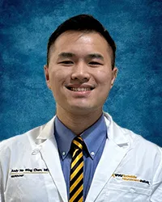

Chan Lab brings together clinician-scientists, engineers, computational neuroscientists, and trainees united by a common goal: understanding and healing the human brain.
Our work is guided by an exceptional group of mentors and collaborators across neurosurgery, psychiatry, and neuroscience at WVU and beyond.

Dr. Chan is a physician-scientist epileptologist with expertise in adult and pediatric epilepsy, intracranial electrophysiology, and neuromodulation. He trained under Dr. Helen Mayberg at Mount Sinai, where he developed his foundational interest in subcortical circuit dynamics and DBS. At WVU, his research program focuses on the frontal-limbic circuits underlying comorbid depression in epilepsy, and on developing novel neurotechnologies — including in-ear EEG and AR-based BCIs — for monitoring and rehabilitation.
Board-certified in Neurology and Epilepsy. NIH K23 awardee. Principal investigator of multiple IRB-approved clinical research protocols.
We maintain strong relationships with past trainees. If you have trained in the Chan Lab and wish to be listed here, please reach out.
We are actively recruiting medical students, residents, and graduate students. Training spans clinical research, computational neuroscience, and device development.
View Open Positions